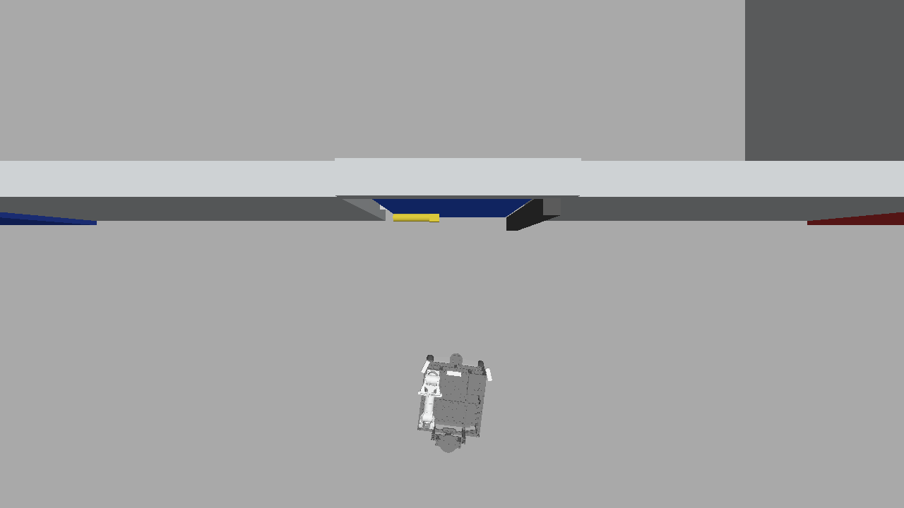
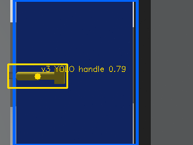
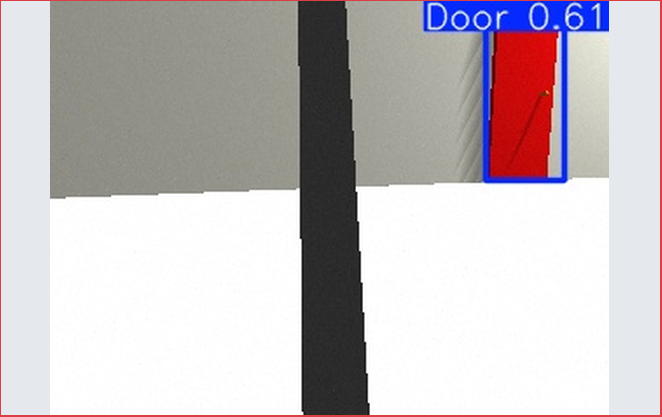
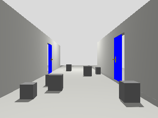
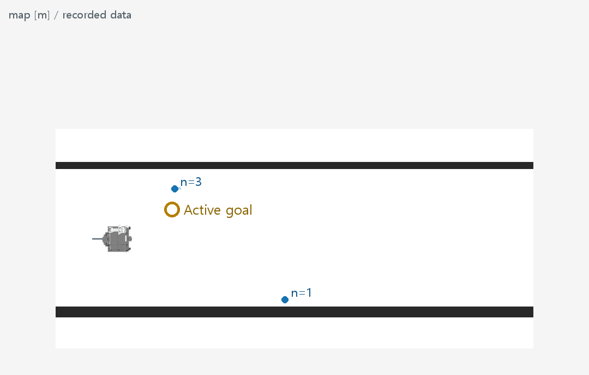
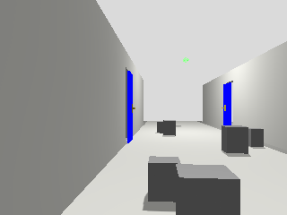

Asset finder / use full-resolution originals

R2 복도와 로봇 배치
2026-09-22 / PLATFORM_ONLY
P1 최신 문 후보·손잡이 bbox
2026-09-22 / R34_SINGLE_DOOR
P_red 빨간문 검출 예시
2026-09-10 / HISTORICAL_PERCEPTION
Q1_camera 관측 과정 1: 카메라
2026-09-22 / MEMORY_R3
Q1_map 관측 과정 1: 기억지도
2026-09-22 / MEMORY_R3
Q2_camera 관측 과정 2: 카메라
2026-09-22 / MEMORY_R3